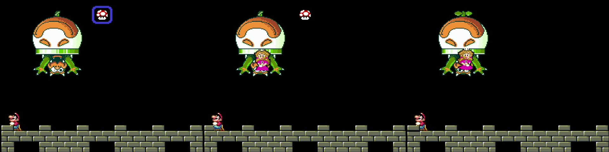

はじめに
使える機種
任天堂から出てるものはすべてOK
エミュレーターは使えるものが制限されてるので注意
以下許可されているエミュレーター及び互換機
*のついたものは11Exit(Nocape)Cloud,0Exitでは使用不可(BSNESはパフォーマンスコアのみ該当)
バージョンについて
スーパーマリオワールドには以下のバージョンが存在する。
- 日本版
- 最初に発売されたバージョン。
- 北米版
- 北米向けにテキストを英語に変更したバージョン。一部コースのレイアウト変更、リフトンをヨッシーで食べれられなくなるなど変更された要素もある。
- 北米版(マリコレ版)
- 北米で販売されたスーパーマリオコレクションで遊べるバージョン。ルイージのスプライト変更とワールドマップ上でセレクトボタンを押すとゲームを終了できるようになったこと以外は北米版と同じ。
- 欧州版(初期版)
- 欧州向けに一部仕様を変更したバージョン。映像形式がNTSCからPAL(60fps→50fps)になることを受けて、マリオの速度を約1.2倍にしている。解像度がNTSCのままなので、上下に空白ができる。
- 欧州版(後期版)
- 解像度をPALに合わせたバージョン。ほぼ内容は初期版と同じだが、96ゴールを達成したセーブのゴールカウントが青く表示されるなど僅かな変更あり。
- 欧州版(マリコレ版)
- 欧州で販売されたスーパーマリオコレクションで遊べるバージョン。変更点は北米版と同様。
全てのカテゴリーで日本版が最も速いが、任意コード実行では北米版でのみ実行可能なものもある。
タイマー関連
時間が測れるなら何でもよいが
LiveSplit(windows)、
LiveSplit One(ブラウザ)を推奨
計測開始はオープニングでマリオが出現したフレーム
ファイル選択画面で"1 PLAYER GAME"選択してから2.196秒(132F)後にマリオが出現するので、
ツールによる自動計測でない限りタイマーのオフセットを-2.2秒にし、タイトルの"1
PLAYER GAME"の選択と同時にタイマーを開始させるとよい
計測終了はクッパ戦にてピーチが出現した瞬間 最初の1フレームだけ左を向いているのでわかりやすい

タイマーを止めるフレーム ピーチが左を向いているほか、アイテムストックの枠が消えて中身のみが表示される(次のフレームには中身も非表示になる)
クッパを倒さないカテゴリーではプレイヤーがマリオ操作できなくなるフレームで計測終了になる